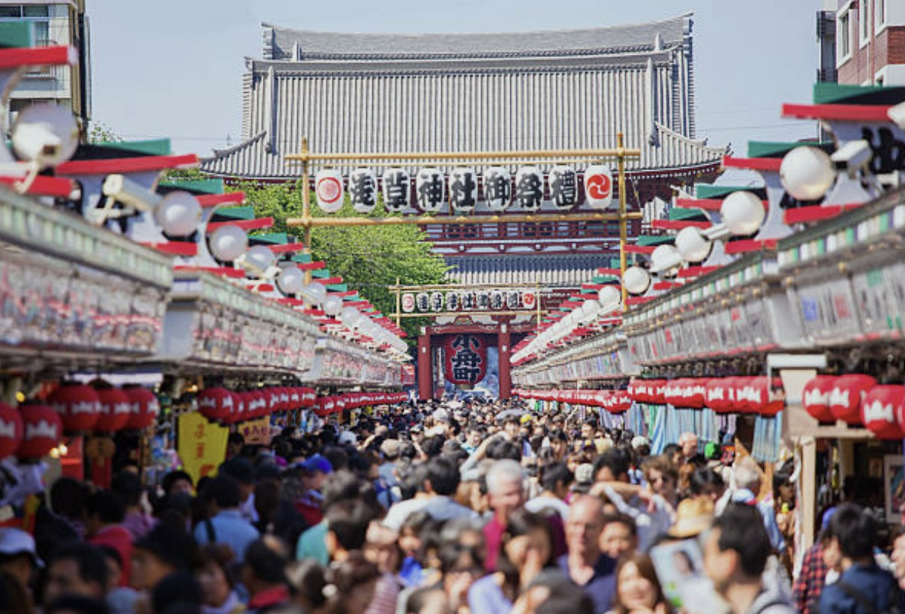
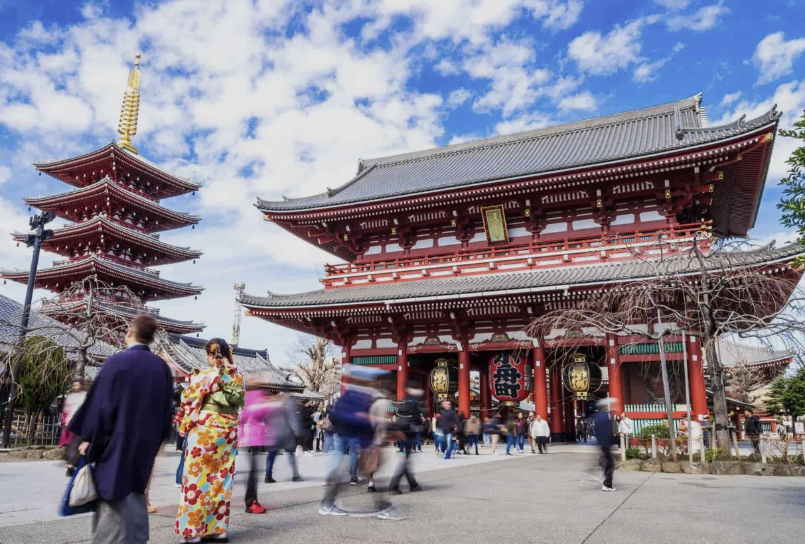
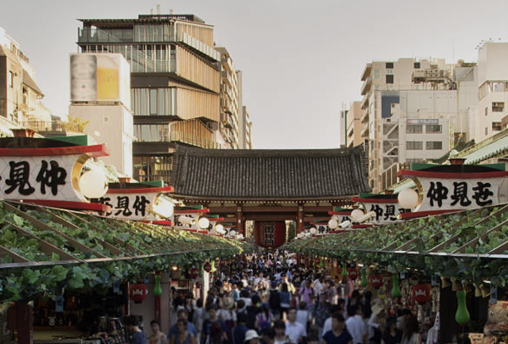
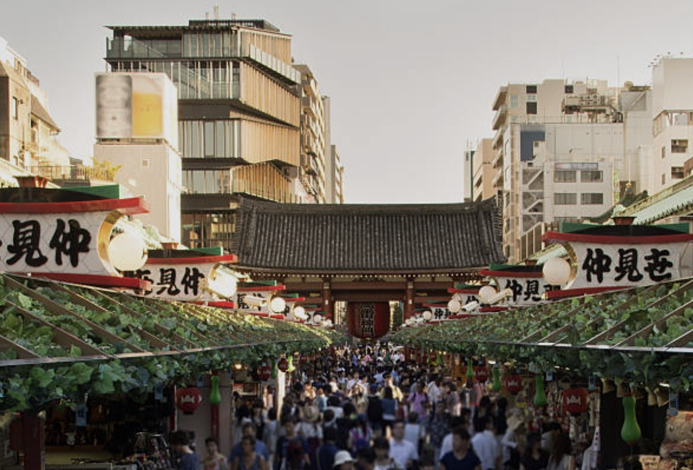
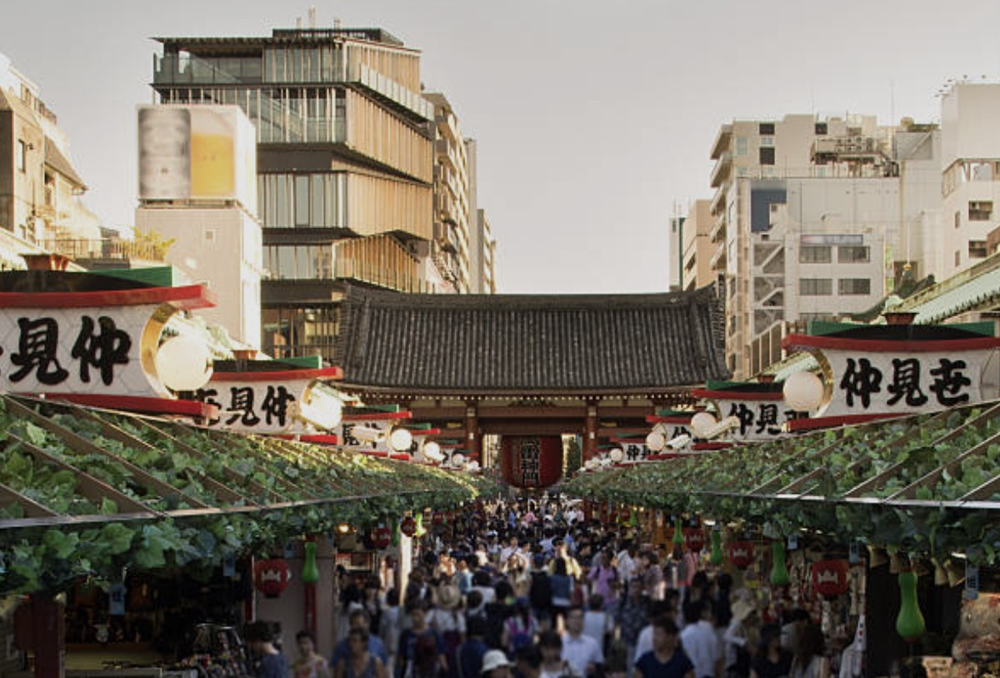

 


위치 / 접근
도쿄 다이토구 아사쿠사 2-3-1. 긴자선·아사쿠사선·츠쿠바 익스프레스 ‘아사쿠사역’에서 도보 5분 거리. 스미다강 근처에 있어 수상버스로 도쿄 스카이트리로 이동할 수도 있다. 공항에서는 게이세이선과 아사쿠사선을 연계해 약 50분이면 도착한다.
운영 / 요금 / 시즌 정보
- 본당은 상시 개방, 입장 무료
- 나카미세 상점가는 10:00~18:00 영업
- 벚꽃철·연말 조명·새해 하츠모데 시즌에는 인파가 매우 많음
- 밤에는 조명으로 빛나 고요하고 신비로운 분위기
무엇을 볼 수 있나 / 체험
7세기 창건된 도쿄에서 가장 오래된 사찰 중 하나로, ‘가미나리몬(雷門)’의 붉은 대등불이 상징이다. 향로의 연기를 몸에 쐬며 복을 비는 ‘정화의식’을 체험할 수 있고, 오미쿠지(운세뽑기), 부적 구매, 유카타 대여 등 체험도 다양하다. 덴포인 거리에서는 기모노를 입고 골목길을 산책하며 전통과 현대가 공존하는 분위기를 느낄 수 있다.
먹거리 / 주변 시설
나카미세 거리에는 90여 개 상점이 늘어서 있으며, 닌교야키(팥빵), 센베, 미타라시당고, 말차 아이스크림 등 전통 간식이 가득하다. 거리 끝에는 전통 찻집과 마차 디저트 카페가 있으며, 저녁에는 이자카야에서 일본식 사케와 지역 맥주를 즐기기 좋다.
추천 일정 & 여행 스타일
- 오전: 9시 이전 도착 → 가미나리몬 인증샷 → 본당 참배 → 나카미세 간식 탐방
- 오후: 점심 후 스미다강 산책 → 스카이트리 이동 → 야경 촬영
- 여행 스타일: 전통문화와 현대도시 감성의 조화 / 가족, 커플, 사진 여행 모두 적합
문화 / 역사 / 배경
628년 스미다강에서 관세음보살상을 발견한 두 어부의 전설로 시작된 사찰이다. 에도 시대에는 서민문화의 중심지였고, 제2차 세계대전 후 시민들의 손으로 재건되어 지금의 모습을 갖추었다. ‘불사(不死)의 사찰’이라 불리며 일본 불교 신앙과 관광문화가 만나는 대표 명소로 평가된다.
⚠ 여행 팁
- 주말 오전~오후엔 인파가 많으니 오전 8~9시 방문 추천
- 상점 대부분 현금 결제만 가능하므로 잔돈 준비 필수
- 유카타 대여는 오전 예약이 빨리 마감되므로 사전 예약 필요
- 여름엔 고온다습, 겨울엔 강풍 대비 복장 필수